Indice
Obiettivo
Progettare un sonar che rilevi misure di distanza a 360° e ne stampi un immagine a video, utilizzando un motore stepper ed un sonar HC-SR04.
Schema a blocchi
Per controllare il motore con il PC si usa un arduino.
Per controllare il motore l'arduino ha bisogno di un driver perché non è in grado di fornire la corrente necessaria.
L'arduino inoltre controlla il sensore ultrasuoni HC-SR04.
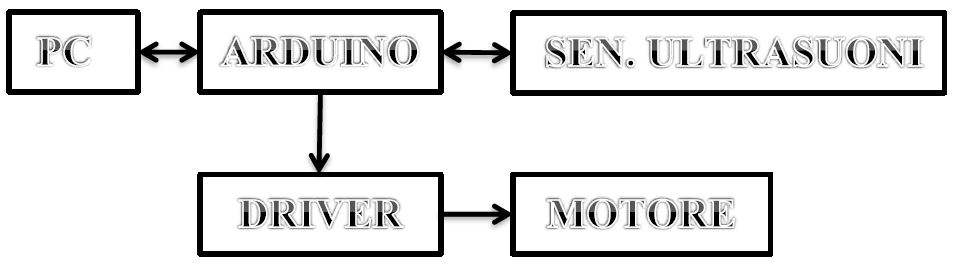
Schematico
Clicca Sull'immagine per ingrandirla
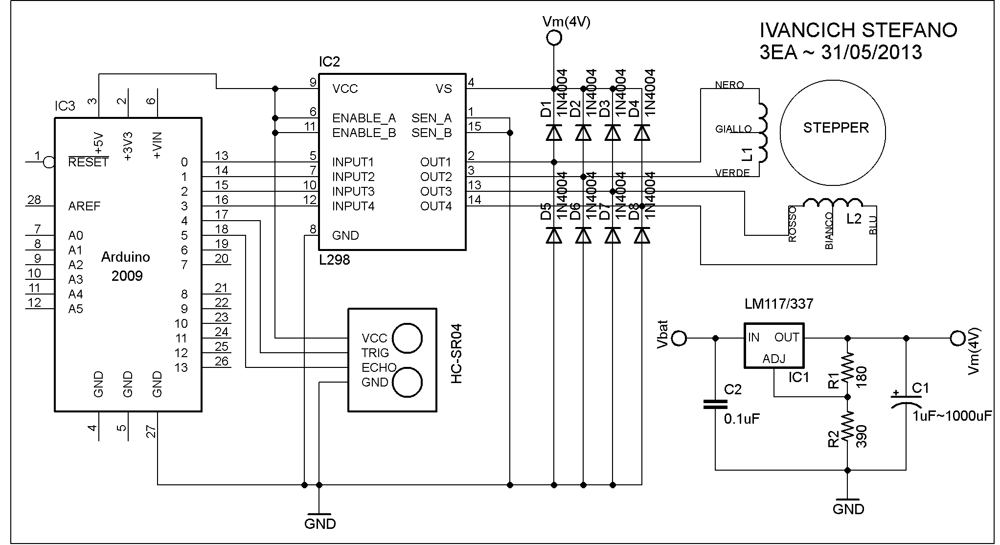
Parti del Progetto
Motore stepper
Le caratteristiche principali del motore stepper a disposizione sono:
Tipo: Ibrido
Corrente: 1.2 A per bobina
Tensione di alimentazione: 4 V
Resistenza: 3.3 Ohm per bobina
Coppia massima: 3.2 kg-cm
Il motore viene usato come bipolare perché è più facile la realizzazione del pcb visto che così vengono usati solo 4 dei 6 fili del motore.
Siccome non si possiede di una alimentazione da 4V è stato creato un regolatore di tensione.
Inoltre l’arduino non è capace di portare 1200mA quindi è stato creato un driver con L298.
Driver
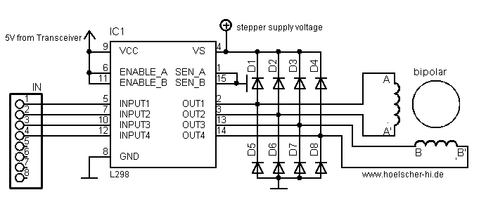
I 4 input sono collegati ad arduino che li comanda, i diodi vengono utilizzati per scaricare le bobine del motore quando si toglie l’alimentazione.
Regolatore
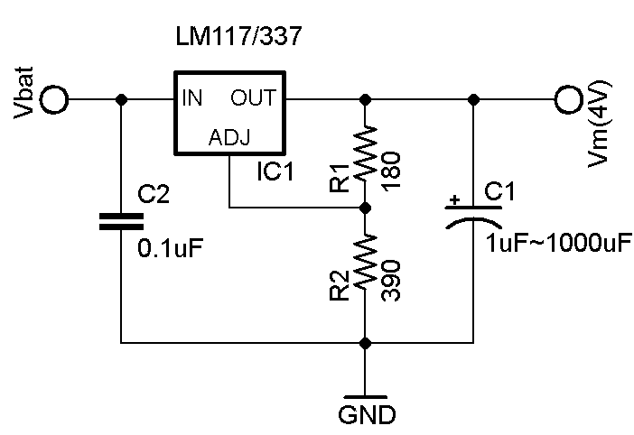
Siccome non si ha a disposizione una batteria da 4V, e stato creato un regolatore con un LM317 che disposto con le resistenze in quella maniera possono essere ricavati i 4V utilizzati dallo stepper.
PCB
Driver
Immagini TOP e BOTTOM
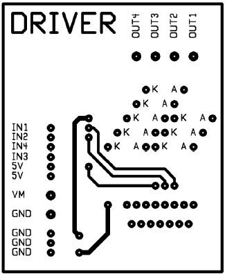
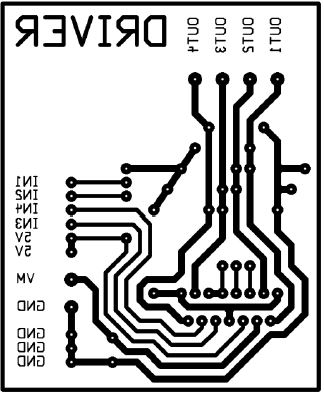
Arduino fornisce i 5V per L298 e il sensore ultrasuoni.
Le GND dei dispositivi sono tutte collegate.
Regolatore
Per il regolatore non è stato utilizzato un PCB ma una basetta millefori:
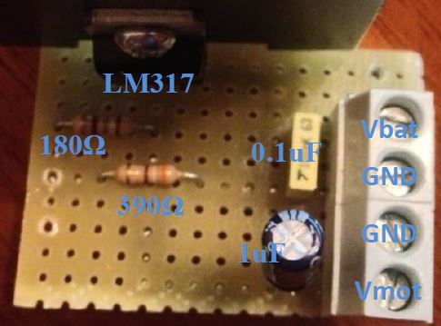
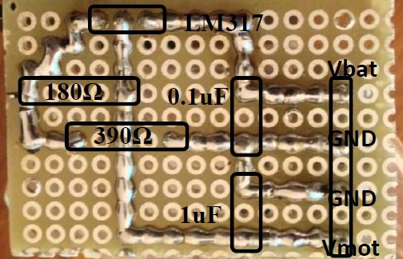
Parte Software
Arduino:
////////////// INCLUSIONE LIBRERIE ////////////////////////
#include <Stepper.h>
///////////// DICHIARAZIONE PIN ///////////////////////////
const int IN1 = 8; // NERO
const int IN2 = 9; // VERDE
const int IN3 = 10; // ROSSO
const int IN4 = 11; // BLU
const int TRIGGER = 5; // Pin in cui è posizionato il TRIGGER
const int ECHO = 4; // Pin in cui è posizionato l'ECHO
const int nStepMotore = 200; // Costante che contiene il numero di step che può fare il motore
//////////// DICHIARAZIONE VARIABILI /////////////////////
float distanza; // Variabile che contiene la misura della distanza misurata
int Step = 0; // Variabile contatore del numero di step eseguiti
int i; // Variabile contatore
//////////// IMPOSTAZIONI ////////////////////////////////
Stepper motoreStepper(nStepMotore, IN1,IN2,IN3,IN4); // Istruzione che riferisce alla libreria stepper il numero
// di step del motore e i pin di ingresso
void setup() { // Funzione eseguita all'avvio di arduino
Serial.begin(9600); // Velocità comunicazione Seriale con PC
pinMode(TRIGGER, OUTPUT); // Invia il segnale
pinMode(ECHO, INPUT); // Riceve il segnale
while(true) { // Funzione che mette in attesa il programma finche non si riceve un dato
if (Serial.available() > 0 && Serial.read()=='A') break; // Se ricevo la lettera A(Avvia) proseguo
}
}
/////////// FUNZIONE PRINCIPALE //////////////////////////
void loop() { // Funzione ciclica eseguita dopo void_setup()
if(Step>=200) { // Ogni 200 Step cambia verso(per non far intorcigliare i fili)
Step=0; // Riporto il conteggio degli step eseguiti a 0
for(i=0;i<200;i++) { // Lo stepper torna alla posizione iniziale
motoreStepper.step(-1); // Eseguo uno step all'indietro
delay(10); // Tempo da asspettare tra uno step e l'altro
}
}
motoreStepper.step(1); // Eseguo uno step
Step++; // Incremento il contatore di step
// Misuro distanza:
digitalWrite(TRIGGER, HIGH); // Mando un impulso che dura 10us
delayMicroseconds(10);
digitalWrite(TRIGGER, LOW);
distanza=pulseIn(ECHO, HIGH); // Aquisisco il tempo che l'impulso ci mette a tornare
distanza=distanza/58; // Divido il tempo per 58, costante trovata sperimentalmente che restituisce un risultato ottimale
if(distanza>200) distanza=200; // Se la distanza è maggiore di 200cm restituisco 200cm
while(true) { // Funzione che mette in attesa il programma finche non si riceve un dato
if (Serial.available() > 0 && Serial.read()=='D') break; // Se ricevo la lettera D(Dato) proseguo
}
// Invio distanza misurata:
Serial.println(distanza); // Scrive la distanza rilevata
}
Visual Basic:
Ambiente Grafico:
Il codice scritto in visual basic possiede anche un parte in ambiente grafico:
Clicca Sull'immagine per ingrandirla
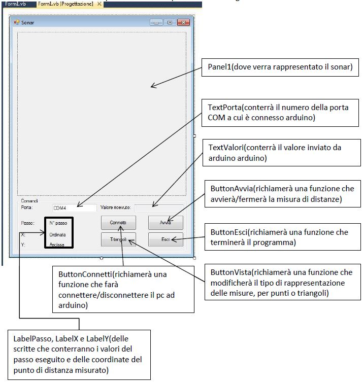
Codice:
Public Class Form1
Dim disegno As Graphics 'Classe che conterrà oggetti di tipo grafico
Dim LineaNera As New Pen(Color.Green, 4) 'Oggetto che rappresenterà graficamente una linea nera spessa 4 pixel
Dim font1 As New Font("Arial", 12, FontStyle.Regular) 'Oggetto che rappresenterà graficamente un font di tipo arial, grandezza 12 e regolare(ne grassetto ne corsivo)
Dim DatoRicevuto As String 'Variabile che conterrà la stringa ricevuta
Dim passo As Integer = 0 'Variabile che conterrà il numero del passo eseguito
Dim raggio As Double 'Variabile che conterrà il valore del raggio dei cerchi dei valori ricevuti
Dim Xp As Integer 'Variabile che conterrà il valore del punto di Ordinata della misura ricevuta
Dim Yp As Integer 'Variabile che conterrà il valore del punto di Ascissa della misura ricevuta
Dim Xl As Integer 'Variabile che conterrà il valore del punto di Ordinata della linea di traccia
Dim Yl As Integer 'Variabile che conterrà il valore del punto di Cordinata della linea di traccia
Dim angolo As Double 'Variabile che conterrà il valore dell'angolo dello step
Dim distanze(200, 1) As Integer 'Vettore che conterrà i 200 valori di cordinate di ogni passo(X e Y)
Dim punti(2) As Point 'Oggetto di tipo punto/vettore che conterrà 3 cordinate
Private Sub Form1_Load() Handles MyBase.Load 'Funzione eseguita all'avvio del programma
SerialPort1.Close() 'Chiude la porta seriale se era già aperta
For i = 1 To 200 'Inizializzo l'array distanze mettendo ogni punto al centro(X 200, Y 200)
distanze(i, 0) = 200 'Assegno al vettore distanze la cordinata X del punto centrale(200)
distanze(i, 1) = 200 'Assegno al vettore distanze la cordinata Y del punto centrale(200)
Next
End Sub
Private Sub Timer1_Tick() Handles Timer1.Tick 'Funzione eseguita ad ogni intervallo di tempo prestabilito(Timer1.interval)
On Error Resume Next 'Se accadono errori in una istruzione, la salta per evitare che il programma crashi
TextValori.Text = DatoRicevuto 'Il testo della textbox valori diventa il contenuto della variabile DatoRicevuto
raggio = DatoRicevuto / 100 'Assegno alla variabile raggio il valore ricevuto (/100 perchè: da stringa a double non mantiene la virgola es. 5.43 invece legge 543 quindi /100 -->5.43)
If passo >= 200 Then 'Quando ha completato un giro:
passo = 0 'Porto la variabile contatore del passo a 0
Threading.Thread.Sleep(2500) 'Fermo il programma per 2500ms(in attesa che il motore ritorni alla posizione iniziale)
End If
passo = passo + 1 'Incremento la variabile passo
disegno = Panel1.CreateGraphics() 'Alla classe disegno assegno come rappresentazione l'oggetto panel1
angolo = (passo * 1.8 - 90) * Math.PI / 180 'Conversione in radianti del angolo*1.8(costante=360°/200step)
Xp = raggio * Math.Cos(angolo) + 200 'Calcolo della codinata X + 200(traslazione dovuta al sistema di cordinate) per la distanza misurata
Yp = raggio * Math.Sin(angolo) + 200 'Calcolo della codinata Y + 200(traslazione dovuta al sistema di cordinate) per la distanza misurata
distanze(passo, 0) = Xp 'Assegno al vettore distanze la cordinata X del passo eseguito
distanze(passo, 1) = Yp 'Assegno al vettore distanze la cordinata X del passo eseguito
LabelPasso.Text = passo 'Il testo del label passo diventa il n° del passo eseguito
LabelX.Text = Xp 'Il testo del label X diventa il valore della cordinata X
LabelY.Text = Yp 'Il testo del label Y diventa il valore della cordinata Y
Xl = Math.Cos(angolo) * 200 + 200 'Calcolo della codinata X + 200(traslazione dovuta al sistema di cordinate) per la linea di traccia
Yl = Math.Sin(angolo) * 200 + 200 'Calcolo della codinata Y + 200(traslazione dovuta al sistema di cordinate) per la linea di traccia
If ButtonVista.Text = "Punti" Then 'Se la selezione di rappresentazione grafica è a "Triangoli"(cioè il testo del bottone vista è punti):
'Panel1.Refresh() 'Aggiorno il panel1 per poter disegnare nuove cose(cancello tutto quello disegnato)
DisegnoRadar() 'Richiamo la funzione che disegna il radar
If passo > 1 Then 'Se è già stato fatto almeno un passo:
For i = 2 To 200 'Ridisegno tutti i 200 triangoli(perchè il comanto panel1.refresh()cancella tutto)
punti(0) = New Point(200, 200) 'Al punto 0 assegno le cordinate 200,200 (il centro del cerchio)
punti(1) = New Point(distanze(i - 1, 0), distanze(i - 1, 1)) 'Al punto 1 assegno le cordinate della distanza precedente
punti(2) = New Point(distanze(i, 0), distanze(i, 1)) 'Al punto 2 assegno le cordinate della distanza attuale
disegno.FillPolygon(Brushes.LimeGreen, punti) 'Disegna sulla classe disegno(panel1) un triangolo di colore verde chiaro di cordinate prese dall'oggetto/vettore punti
disegno.DrawLine(LineaNera, 200, 200, Xl, Yl) 'Disegna sulla classe disegno(panel1) una linea di tipo LineaNera(dichiarata all'inizio), che parte dalle cordinate 200,200(centro del cerchio) e va fino alle cordinate Xl e Yl calcolate(al bordo)
Next
End If
Else 'Altrimenti:
'Panel1.Refresh() 'Aggiorno il panel1 per poter disegnare nuove cose(cancello tutto quello disegnato)
DisegnoRadar() 'Richiamo la funzione che disegna il radar
For i = 1 To 200 'Ridisegno tutti i 200 punti (perchè il comanto panel1.refresh()cancella tutto)
disegno.FillEllipse(Brushes.LimeGreen, distanze(i, 0) - 5, distanze(i, 1) - 5, 10, 10) 'Disegna sulla classe disegno(panel1) una piccola ellise piena a forma di cerchio che parte dalle cordinate X-5,Y-5(per farla risultare in centro) ed è grande 10,10 pixel
disegno.DrawLine(LineaNera, 200, 200, Xl, Yl) 'Disegna sulla classe disegno(panel1) una linea di tipo LineaNera(dichiarata all'inizio), che parte dalle cordinate 200,200(centro del cerchio) e va fino alle cordinate Xl e Yl calcolate(al bordo)
Next
End If
SerialPort1.WriteLine("D") 'Scrivo sulla porta seriala "D"(Dato, l'arduino invierà un dato)
End Sub
Private Sub DisegnoRadar() 'Funzione che disegna sul panel1 il radar
disegno.FillRectangle(Brushes.Black, 0, 0, 400, 400) 'Disegna sulla classe disegno(panel1) un rettangolo verde che parte dal punto 0,0 e grande 400,400 pixel
disegno.DrawEllipse(Pens.Green, 0, 0, 400, 400) 'Disegna sulla classe disegno(panel1) una ellisse a forma di cerchio verde che parte dal punto 0,0 e grande 400,400 pixel
disegno.DrawEllipse(Pens.Green, 50, 50, 300, 300) 'Disegna sulla classe disegno(panel1) una ellisse a forma di cerchio verde che parte dal punto 50,50 e grande 300,300 pixel
disegno.DrawEllipse(Pens.Green, 100, 100, 200, 200) 'Disegna sulla classe disegno(panel1) una ellisse a forma di cerchio verde che parte dal punto 100,100 e grande 200,200 pixel
disegno.DrawEllipse(Pens.Green, 150, 150, 100, 100) 'Disegna sulla classe disegno(panel1) una ellisse a forma di cerchio verde che parte dal punto 150,150 e grande 100,100 pixel
disegno.DrawLine(Pens.Green, 200, 400, 200, 0) 'Disegna sulla classe disegno(panel1) una linea di colore verde, che parte dalle cordinate 200,400(centro basso del cerchio) e va fino alle cordinate 200,0(centro alto del cerchio)
disegno.DrawLine(Pens.Green, 0, 200, 400, 200) 'Disegna sulla classe disegno(panel1) una linea di colore verde, che parte dalle cordinate 0,200(centro a sinistra del cerchio) e va fino alle cordinate 400,200(centro a destra del cerchio)
disegno.DrawLine(Pens.Green, 100, 27, 300, 373) 'Disegna sulla classe disegno(panel1) una linea di colore verde, che parte dalle cordinate 100,27(150°) e va fino alle cordinate 300,373(330°)
disegno.DrawLine(Pens.Green, 100, 373, 300, 27) 'Disegna sulla classe disegno(panel1) una linea di colore verde, che parte dalle cordinate 100,373(210°) e va fino alle cordinate 300,327(30°)
disegno.DrawLine(Pens.Green, 27, 100, 373, 300) 'Disegna sulla classe disegno(panel1) una linea di colore verde, che parte dalle cordinate 27,100(120°) e va fino alle cordinate 373,300(300°)
disegno.DrawLine(Pens.Green, 373, 100, 27, 300) 'Disegna sulla classe disegno(panel1) una linea di colore verde, che parte dalle cordinate 373,100(60°) e va fino alle cordinate 27,300(230°)
disegno.DrawString("50", font1, Brushes.Green, 200, 150) 'Disegna sulla classe disegno(panel1) una scritta "50" di colore verde alle cordinate 200,150
disegno.DrawString("100", font1, Brushes.Green, 200, 100) 'Disegna sulla classe disegno(panel1) una scritta "100" di colore verde alle cordinate 200,100
disegno.DrawString("150", font1, Brushes.Green, 200, 50) 'Disegna sulla classe disegno(panel1) una scritta "150" di colore verde alle cordinate 200,50
disegno.DrawString("200", font1, Brushes.Green, 200, 0) 'Disegna sulla classe disegno(panel1) una scritta "200" di colore verde alle cordinate 200,0
End Sub
Private Sub SerialPort1_DataReceived() Handles SerialPort1.DataReceived 'Funzione eseguita ogni volta che la porta seriale riceve un dato
DatoRicevuto = SerialPort1.ReadLine 'Assegna alla variabile il dato ricevuto dalla porta seriale
End Sub
Private Sub ButtonConnetti_Click() Handles ButtonConnetti.Click 'Funzione richiamata quando si cliccka sul ButtonConnetti
On Error Resume Next 'Se accadono errori in una istruzione, la salta per evitare che il programma crashi
If ButtonConnetti.Text = "Connetti" Then
SerialPort1.PortName = TextPorta.Text 'Assegna al portname la porta COM del textporta
SerialPort1.Open() 'Apre la porta seriale
ButtonConnetti.Text = "Disconnetti" 'La scritta sul bottone connetti diventa "Disconnetti"
TextPorta.Enabled = False 'La textbox Porta non può essere più modificata
ButtonAvvia.Enabled = True 'Abilito il Bottone Avvia per essere clikkato
Else
SerialPort1.Close() 'Chiude la porta seriale
ButtonConnetti.Text = "Connetti" 'La scritta sul bottone connetti diventa "Connetti"
TextPorta.Enabled = True 'La textbox Porta può essere di nuovo modificata
Timer1.Enabled = False 'Disabilito il timer (lo spengo)
ButtonAvvia.Enabled = True 'Disabilito il Bottone Avvia per essere clikkato
ButtonAvvia.Text = "Avvia" 'La scritta sul bottone Avvia diventa "Avvia"
End If
End Sub
Private Sub ButtonAvvia_Click() Handles ButtonAvvia.Click 'Funzione eseguita quando si cliccka sul ButtonAvvia
On Error Resume Next 'Se accadono errori in una istruzione, la salta per evitare che il programma crashi
If ButtonAvvia.Text = "Avvia" Then
ButtonAvvia.Text = "Ferma" 'La scritta sul bottone avvia diventa "Ferma"
SerialPort1.WriteLine("A") 'Scrivo sulla porta seriala "A"(Avvia)
Timer1.Enabled = True 'Abilito il timer
Else
ButtonAvvia.Text = "Avvia" 'La scritta sul bottone Avvia diventa "Avvia"
Timer1.Enabled = False 'Disabilitto il timer (lo spengo)
End If
End Sub
Private Sub ButtonVista_Click() Handles ButtonVista.Click 'Funzione richiamata quando si cliccka sul ButtonVista
If ButtonVista.Text = "Triangoli" Then 'Cambio il nome del bottone vista quando ci si clikka sopra
ButtonVista.Text = "Punti" 'La scritta sul bottone connetti diventa "Punti"
Else
ButtonVista.Text = "Triangoli" 'La scritta sul bottone connetti diventa "Triangoli"
End If
End Sub
Private Sub ButtonEsci_Click() Handles ButtonEsci.Click 'Funzione eseguita quando si cliccka sul ButtonEsci
SerialPort1.Close() 'Chiude la porta seriale se era già aperta
Me.Close() 'Chiude l'intero programma
End Sub
End Class
Il timer è una sorta di void_loop con delay impostato a 200ms(timer1.interval) valore minimo trovato sperimentalmente che concede il tempo necessario al motore di fare una step e di misurare una distanza.
I due programmi funzionano in questa maniera:
Quando dal pc si preme sul bottone Avvia, viene scritto sulla porta seriale “A” cioè avvia, arduino aspetta questo per avviarsi e iniziare il void_loop(); e viene attivato il timer1.
Arduino fa uno step e rileva una misura, aspetta che dal computer arrivi la stringa “D” cioè invia dato, per inviare la distanza misurata, poi ricomincia facendo un altro step.
In contemporanea il timer “disegna” sul panel1 una schermata di sonar(sfondo nero, cerchi verdi, linee…) e il punto relativo alla distanza acquisita da arduino.
Questa rappresentazione può essere fatto in 2 maniere:
- per punti, ovvero viene disegnato un semplice punto per ogni misura effettuata.
- Per triangoli, ovvero viene disegnato un triangolo per ogni misura che parte dal centro del cerchio e con un vertice tocca la misura precedente, con l'altro tocca la misura appena effettuata.
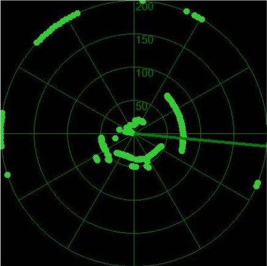
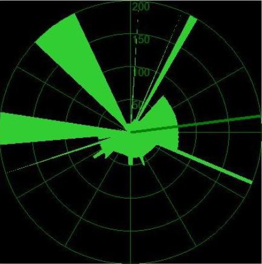
Il sistema di coordinate di visual basic non possiede valori negativi ed è formato da un unico quadrante:
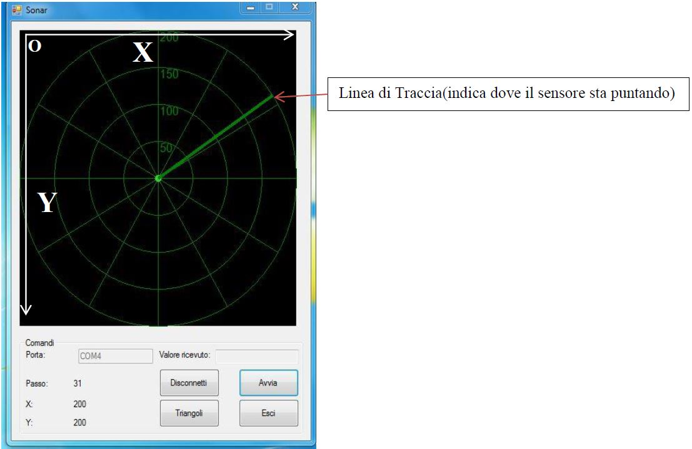
Componenti utilizzati
- L298
- LM117
- Basetta presensibilizzata a doppia faccia
- Basetta millefori mono faccia
- Cavetti breadboard
- Batteria 9V
- Motore stepper 200 step a 1200mA
- 5 Morsettiere da 2
- 9 connettori Strip femmina
- 8 diodi 1N4004
- Resistore da 180 Ω
- Resistore da 390 Ω
- Condensatore elettrolitico da 1uF
- Condensatore plastico da 0.1uF
- Arduino UNO
- 2 Dissipatori
- Sensore ultrasuoni HC-SR04
- Compensato
Immagini Varie
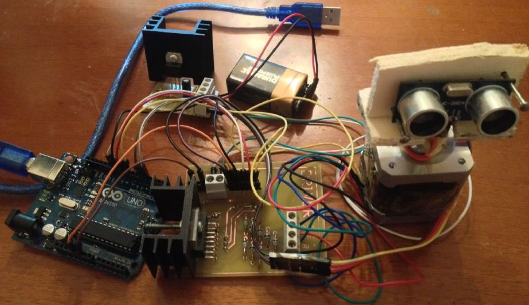{kind=link}
{kind=link}